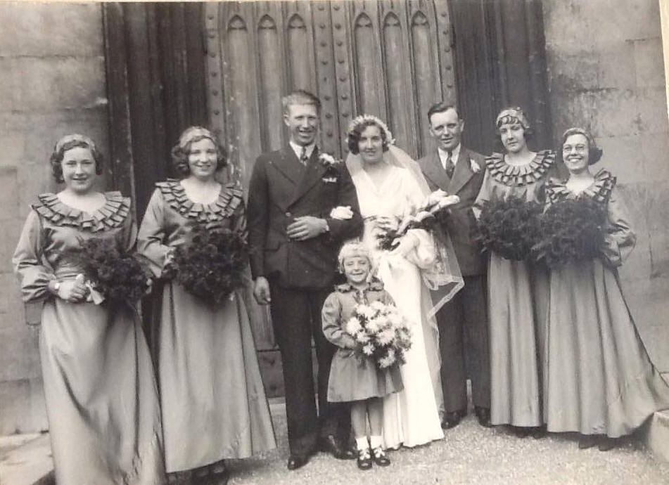
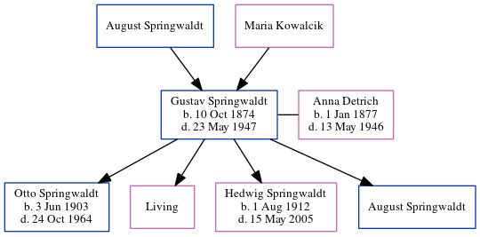

Henry Richard Stephen Cowell 1913 - 1984
[ Home ] | [ Calendar ] | [ Surnames Index ] | [ Errors ] | [ Family History ]A general labourer and the child of James Cowell (a seaman collier with the whitstable shipping company) and Emily Lawrence, Henry Cowell, (also known as Mick Cowell) the uncle of Nigel Horne, was born in Folkestone, Kent, England on 28 Sept 19131,2,3,4,5 and. He married Ethel Fagg (with whom he had 3 surviving children Brian H, Mavis E and Alan Stephen) at Holy Trinity Church, Margate, Kent, England on 26 Oct 19356.
During his life, he was living at 7 Pouces Cottages, Minster, Thanet, Kent on 19 Jun 19211; at 22 Church Square in Margate on 29 Sept 19392 - less than a mile from his sister Emily Edith who was living at 12 Hertford Road in Margate; at Nash Road in Margate in 1944; and at 41 Nash Road in Margate in 195310, in 19558, in 196311, in 19657 and in 19749.
He died in Nov 1984 in Thanet, Kent, England4.
Parents
- James Frederick was born on 2 Mar 1887
- Emily Jane was born on 30 Sept 1887
Citations
- 1921 Census Of England & Wales - Findmypast (was age 7 and the son of the head of the household)
- 1939 Register - Findmypast (was the head of the household)
- England & Wales deaths 1837-2007 - Findmypast
- England & Wales, Death Index: 1984-2005 Online publication - Provo, UT, USA: The Generations Network, Inc., 2007.Original data - General Register Office. England and Wales Civil Registration Indexes. London, England: General Register Office. © Crown copyright. Published by permission of the Cont
- England & Wales, FreeBMD Birth Index, 1837-1915 Online publication - Provo, UT, USA: The Generations Network, Inc., 2006.Original data - General Register Office. England and Wales Civil Registration Indexes. London, England: General Register Office. © Crown copyright. Published by permission of the Cont
- England & Wales marriages 1837-2008 - Findmypast
- 1965 Kelly's Thanet Directory
- 1955 Kelly's Thanet Directory
- 1974 Kelly's Thanet Directory
- 1953 Kelly's Thanet Directory
- 1963 Kelly's Thanet Directory
Media
Henry Cowell - Ethel Fagg - marriage

Henry Cowell
Thanet Advertiser September 1, 1944

1965 Kelly's Thanet Directory

1955 Kelly's Thanet Directory

1974 Kelly's Thanet Directory

1953 Kelly's Thanet Directory

1963 Kelly's Thanet Directory

England & Wales deaths 1837-2007 - BMD/D/1984/11/74258835
1939 Register Transcription - TNA-R39-1755-1755D-017-27
England & Wales births 1837-2006 - BMD/B/1913/4/AZ/000312/074
England & Wales marriages 1837-2008 - BMD/M/1935/4/AZ/000270/034
1939 Register Transcription - TNA-R39-1755-1755D-017-26
Kent Marriages And Banns - GBPRS/CANT/MAR/011579/1
Family Tree
Map
Generated by ged2site. Last updated on Jul 3, 2024
Known Issues
Residence record for 1944 contains no citation
Listed in the residence for 1944, but spouse Ethel Fagg is not
Listed in the residence for 1953, but spouse Ethel Fagg is not
Listed in the residence for 1955, but spouse Ethel Fagg is not
Listed in the residence for 1963, but spouse Ethel Fagg is not
Listed in the residence for 1974, but spouse Ethel Fagg is not